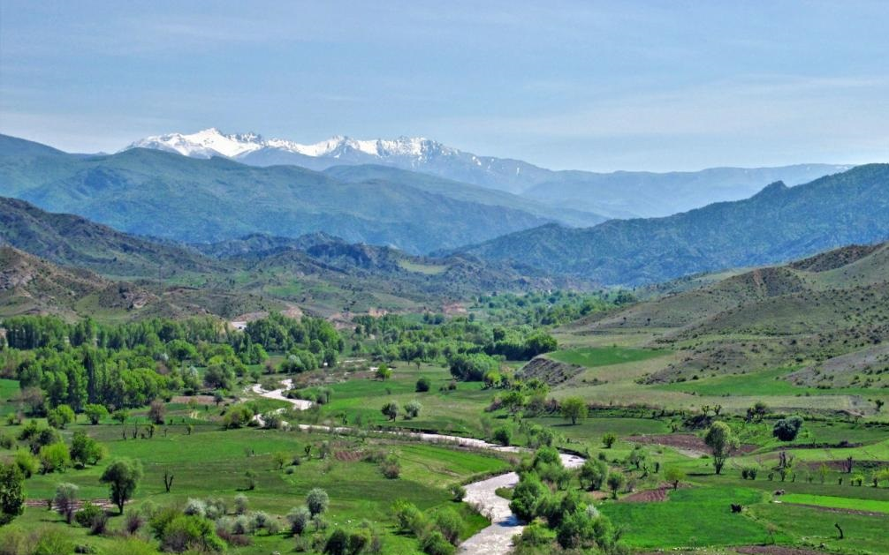
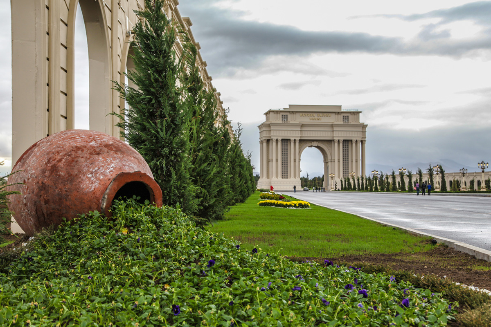
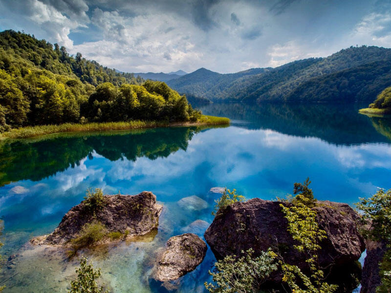
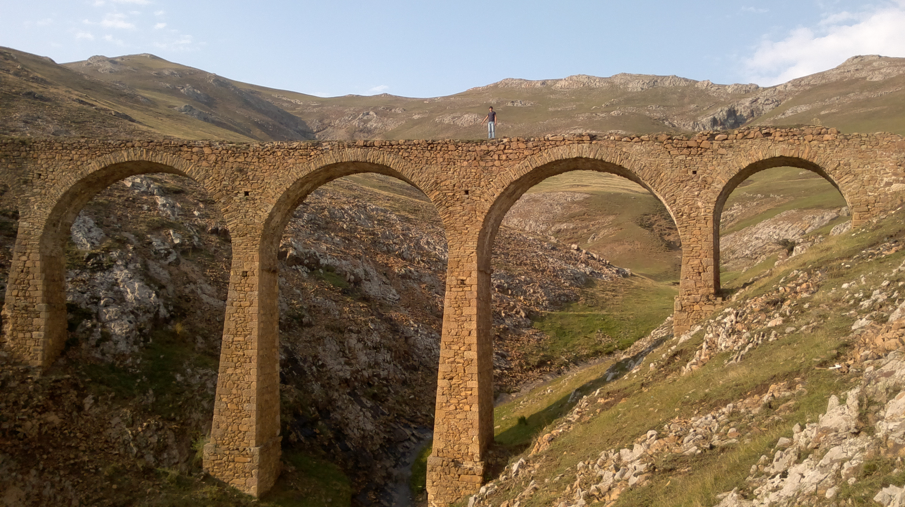

Tovuz rayonu — Azərbaycan Respublikasında inzibati – ərazi vahididir. İnzibati mərkəzi Tovuz şəhəridir. 2020-ci ilin iyul ayında Tovuz Ermənistanla baş verən döyüşlərin əsas ərazisinə çevrilmişdir. Tovuz Azərbaycan Respublikasının şimal-qərbində, Gəncə-Qazax düzündə yerləşməklə əlverişli iqtisadi coğrafi mövqeyə malikdir. Tovuz şəhəri paytaxt Bakıdan qərbdə, Bakı-Qazax magistralının 430 km də yerləşir. Tovuz rayonunun ərazisi relyef xüsusiyyətlərinə görə 4 zonaya: orta dağlıq, alçaq dağlıq, dağətəyi və yüksək dağlıq zonalara ayrılır. Rayonun cənub hissəsi orta və yüksək dağlıq zonada, mərkəz hissəsi alçaq dağlıq və dağətəyi zonada, şimal hissəsi isə dağətəyi düzənlikdə yerləşir. Ərazi 330 m dəniz səviyyəsindən yüksəkdə yerləşir.

Gəncə - Azərbaycan Respublikasının ikinci böyük şəhəridir. Gəncə şəhəri Kiçik Qafqazın şimal-şərq tərəfində, Gəncə-Qazax düzənliyində, Gəncəçayın hər iki sahilində yerləşir. Dəniz səviyyəsindən 400–450 m yüksəklikdə yerləşən Gəncə şəhəri Azərbaycanın qərbində, paytaxt Bakı şəhərindən 375-km qərbdə, Kiçik Qafqazın şimal-şərq ətəyini Kür-Araz ovalığındakı Gəncə-Qazax düzənliyində yerləşir. Gəncə və ona yaxın ərazilərdə, Azərbaycan dilinin qərb qrupu dialekt və şivələrinə aid Gəncə dialekti (Gəncə ləhcəsi) mövcüddur.

Göygöl Kəpəz dağının ətəyində, səfalı bir guşədə yerləşir. Onun ətrafında daha 7 eyni mənşəli göl vardır. Uçqunların əmələ gətirdiyi bənd nəticəsində Göygöl, Maralgöl, Zəligöl, Ağgöl, Şamlıgöl, Ördəkgöl, Ceyrangöl, Qaragöl gölləri yaranmışdır. Göygöl dəniz səviyyəsindən 1556 metr yüksəklikdə yerləşir. Su aynasının sahəsi 80 hektara yaxındır. Gölün uzunluğu 2450 m, eni 595 m, ən dərin yeri 95 m-dir. Buradakı təmiz, şəffaf suyun həcmi 24 mln kub m-ə çatır. Maral-göl dəniz səviyyəsindən 1902 m yüksəklikdə yerləşir, sahəsi 23 hektardır, ən dərin yeri 60 m-dir. Göy-göldən fərqli olaraq, onun ətrafını subalp çəmənlikləri əhatə edir.

Gədəbəy rayonu Kiçik Qafqazın orta və yüksəklik dağlıq qurşağında yerləşir. Rayon ərazisi Şahdağ silsiləsinin şimal yaçacını, Başkənd-Dəstəfur çökəkliyinin və Şəmkir dağ massivinin bir hissəsini əhatə edir.Körpülərdən ən məşhur olanını yerli sakinlər "Qanlı körpü" adlandırıblar ki, onun da faciəli tarixçəsi var. Belə ki, mədəndə işləyən fəhlələri işdən evə daşıyan vaqon körpünün üstündən keçərkən körpü aşıb. Nəticədə vaqonda olan fəhlələrin hamısı həlak olub. O gündən sonra el arasında bu körpüyə "Qanlı körpü" adı verilib. Yerli daşlardan, qövsvari formada inşa edilmiş bu viaduk nadir memarlıq nümunəsi hesab olunur. Abidə zaman-zaman həm insan, həm də təbiətin təsiri altında dağıntılara məruz qalır.